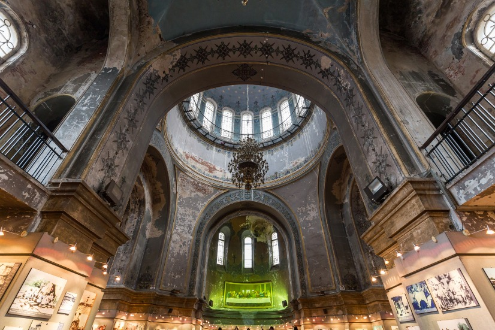
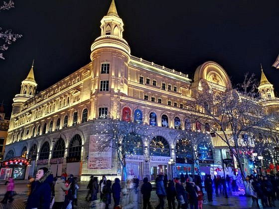
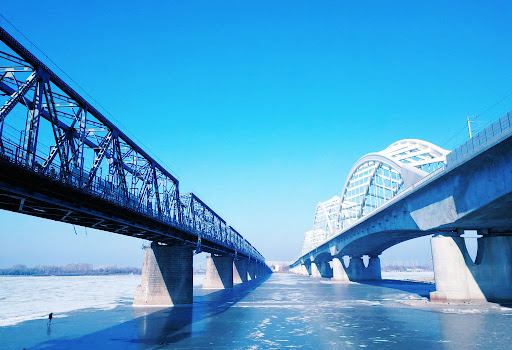
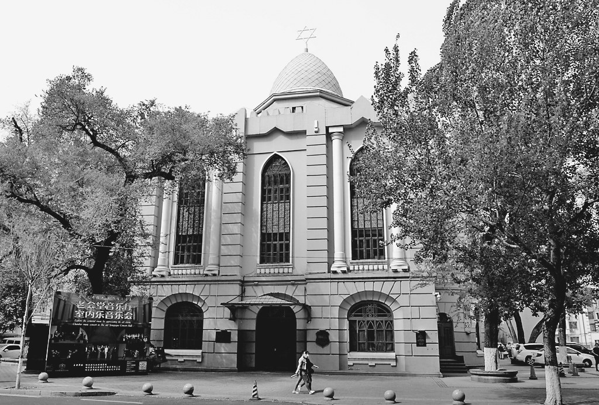
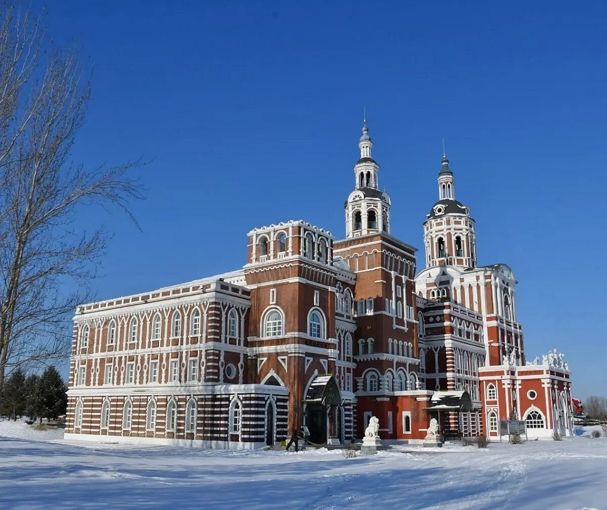
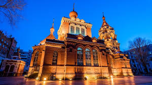
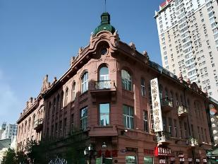

⛪ Echoes of Little Russia

Saint Sophia Cathedral
The unmistakable symbol of Harbin. Built in 1907 by Russian expatriates, this Byzantine-style Orthodox church with its signature green onion dome now houses the Harbin Architecture Art Gallery. The square in front is where locals gather for snow selfies.
⭐ Largest Orthodox church in Far East
Central Street (Zhongyang Dajie)
Pedestrian Street · 1.4kmA living museum of European architecture. Baroque, Renaissance, and Art Nouveau buildings line this cobblestone street, built with stones that cost a silver dollar each in 1924.

Songhua River Railway Bridge
Built 1901 · Trans-Siberian LinkThe reason Harbin exists. This steel truss bridge was the first bridge across the Songhua River and the critical link for the Chinese Eastern Railway connecting Moscow to Vladivostok via Manchuria.

Jewish New Synagogue
Built 1921At its peak, Harbin was home to over 20,000 Russian Jews fleeing pogroms. This beautifully restored synagogue now houses the Harbin Jewish History Museum, telling a little-known chapter of the city's multicultural past.

Volga Manor
Cultural Theme ParkA sprawling recreation of a Russian village 30km outside the city. Features rebuilt wooden churches, dachas, and a replica of the destroyed St. Nicholas Church. Sledding in winter, flower fields in summer.

Saint Alexeev Church
Built 1931 · Active ChurchUnlike Sophia (now a museum), this red-brick Orthodox church still holds regular services for Harbin's small Russian Orthodox community. The interior is intimate and covered in icons.

Modern Hotel (Madie'er Binguan)
Opened 1906The grand dame of Harbin hotels. This Art Nouveau gem hosted celebrities, spies, and Silk Road merchants. Even if you don't stay, have a coffee in the 1903 lobby bar — it feels like stepping into a Tarkovsky film.